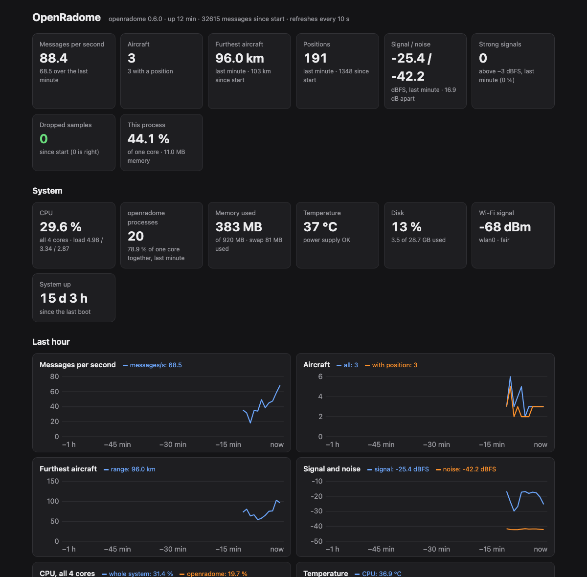

OpenRadome is an ADS-B receiver for the Raspberry Pi and any Linux, Mac or Windows computer. It turns a €20 USB radio into a live picture of the aircraft around you: a drop-in replacement for readsb, rewritten in memory-safe Rust, with a status dashboard and an AI assistant interface built in.
curl -fsSL https://raw.githubusercontent.com/phillip-bailey/openradome/main/install.sh \
| sudo bash -s -- --lat 51.5 --lon -0.1Aircraft work out their own position by GPS and broadcast it on 1090 MHz about twice a second, with their identity, altitude, speed and heading. It is how air traffic control sees more, how aircraft see each other, and much of the world's airspace now requires it. The signal is not encrypted: anyone with a small receiver can hear aircraft 200 to 400 km away.
For your own live map, and to join the tens of thousands of volunteer stations that feed flight-tracking networks such as adsb.lol, adsb.fi, airplanes.live, Flightradar24 and FlightAware. OpenRadome is the software at the heart of such a station: it decodes the radio signal and shares the result with the networks and maps you choose.
Same flags, same outputs, same wire formats as readsb, so it drops into an existing station unchanged. Plus the things a station owner actually wants to know.
The same command-line options, Beast/raw/SBS ports and JSON files. tar1090, feed clients and MLAT clients work unchanged.
Recorded and live radio data decode to the same messages as readsb; aircraft.json, range outlines and API answers match.
Written in Rust with unsafe forbidden, including a pure-Rust USB driver for the dongle. No librtlsdr, no libusb.
A single static program for every Raspberry Pi, Linux PC, Mac and Windows. One TOML config file, explained line by line.
Live figures, 24-hour graphs, the Pi's health and every connected feed on one page. Read-only, no JavaScript.
A built-in MCP server lets AI assistants like Claude answer questions about your station from live data. Token-protected, HTTPS.
Turn on dashboard-port and open the page from any browser on your network: message rate, aircraft,
range, signal and noise, dropped samples, CPU, temperature, power and Wi-Fi, with graphs for the last 24 hours.

OpenRadome speaks the Model Context Protocol, so an AI assistant can read your station's live figures and explain them in plain language. Add it to Claude Code in one command:
claude mcp add --transport http radome \
https://<your-pi>:8091/mcp \
--header "Authorization: Bearer <token>"Then ask, for example:
On Raspberry Pi OS, Debian, Ubuntu or any Linux with systemd, with an RTL-SDR dongle plugged in:
curl -fsSL https://raw.githubusercontent.com/phillip-bailey/openradome/main/install.sh \
| sudo bash -s -- --lat 51.5 --lon -0.1Add --dashboard-port 8090 for the dashboard and --mcp-port 8091
for the AI assistant interface. Re-run it to upgrade; --rollback goes back one version.
radome system user, gives it the dongle, and keeps the TV driver off it./etc/radome/radome.toml with your choices filled in./run/radome, Beast out on port 30005 for your feeders and maps.Every release has one archive per platform, built and checksummed by GitHub Actions. On Linux the installer picks for you; otherwise:
| Your device | Download |
|---|---|
| Raspberry Pi 5, 4, 3 or Zero 2 W on 64-bit Raspberry Pi OS | linux-arm64 |
| Raspberry Pi 5, 4, 3, 2 or Zero 2 W on 32-bit Raspberry Pi OS | linux-armv7 |
| Raspberry Pi 1, Zero or Zero W | linux-armv6 |
| Linux PC, server, mini PC or VM (Intel or AMD) | linux-x86_64 |
| Mac with Apple silicon / with an Intel processor | macos-arm64 / macos-x86_64 |
| Windows PC / Windows on ARM | windows-x86_64 / windows-arm64 |
OpenRadome is a from-scratch Rust reimplementation of readsb by Matthias Wirth, the decoder most stations run, which grew from dump1090 by Salvatore Sanfilippo, Oliver Jowett and FlightAware. readsb is the reference for its behaviour and output, and its decoder logic is ported from readsb's GPL-3.0 code, hence the licence. Full credits are in the NOTICE file.
Free software under the GPL-3.0. Your station's data stays yours: OpenRadome sends nothing anywhere by itself, and you choose which networks to feed. The dashboard and the MCP server are off unless you turn them on, read-only, and the MCP server needs a token.